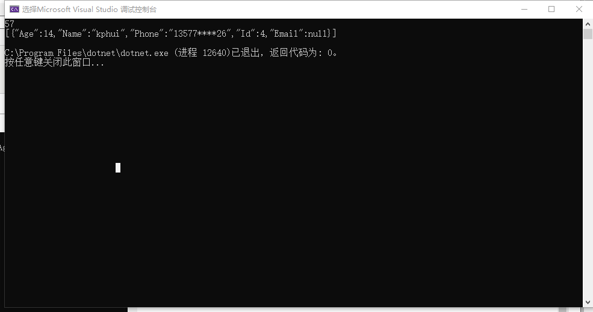

说明: 在日常代码开发中很多的地方都用到了Lambda表达式进行过滤操作，很多优秀的ORM也是使用表达式来进行数据的查询。但是对于一些复杂的过 滤单纯的使用Lambda已经不能够解决问题了那么就需要表达式树来进行条件的一个拼接。
下面介绍一个本人写的一个工具类有助于项目中更好的使用:
1 public static class ExpressionTreeTools
2 {
3 /// <summary>
4 /// 相当于&&操作
5 /// ——just0ne
6 /// </summary>
7 /// <param name="thisFilter">已生成的过滤条件</param>
8 /// <param name="otherFilter">未生成的过滤条件</param>
9 /// <returns>新的过滤</returns>
10 public static Expression And(this Expression thisFilter, Expression otherFilter)
11 {
12 return Expression.AndAlso(thisFilter, otherFilter);
13 }
14 /// <summary>
15 /// 相当于||操作
16 /// ——just0ne
17 /// </summary>
18 /// <param name="thisFilter">已生成的过滤条件</param>
19 /// <param name="otherFilter">未生成的过滤条件</param>
20 /// <returns>新的过滤</returns>
21 public static Expression Or(this Expression thisFilter, Expression otherFilter)
22 {
23 return Expression.OrElse(thisFilter, otherFilter);
24 }
25 /// <summary>
26 /// 相当于==操作
27 /// ——just0ne
28 /// </summary>
29 /// <param name="thisParameterExpression">查询对象</param>
30 /// <param name="propertieName">属性名称</param>
31 /// <param name="propertieValue">属性值</param>
32 /// <returns>新的过滤</returns>
33 public static Expression GotoEqual(this ParameterExpression thisParameterExpression, string propertieName, object propertieValue)
34 {
35 return Expression.Equal(Expression.Property(thisParameterExpression, propertieName), Expression.Constant(propertieValue));
36 }
37 /// <summary>
38 /// 相当于>=操作
39 /// ——just0ne
40 /// </summary>
41 /// <param name="thisParameterExpression">查询对象</param>
42 /// <param name="propertieName">属性名称</param>
43 /// <param name="propertieValue">属性值</param>
44 /// <returns>新的过滤</returns>
45 public static Expression GotoGreaterThanOrEqual<T>(this ParameterExpression thisParameterExpression, string propertieName, object propertieValue)
46 {
47 //大于或等于
48 return Expression.GreaterThanOrEqual(Expression.Property(thisParameterExpression, propertieName), Expression.Constant(propertieValue, typeof(T)));
49 }
50 /// <summary>
51 /// 相当于小于等于操作
52 /// ——just0ne
53 /// </summary>
54 /// <param name="thisParameterExpression">查询对象</param>
55 /// <param name="propertieName">属性名称</param>
56 /// <param name="propertieValue">属性值</param>
57 /// <returns>新的过滤</returns>
58 public static Expression GotoLessThanOrEqual<T>(this ParameterExpression thisParameterExpression, string propertieName, object propertieValue)
59 {
60 //小于或等于
61 return Expression.LessThanOrEqual(Expression.Property(thisParameterExpression, propertieName), Expression.Constant(propertieValue, typeof(T)));
62 }
63 /// <summary>
64 /// 相当于>操作
65 /// ——just0ne
66 /// </summary>
67 /// <param name="thisParameterExpression">查询对象</param>
68 /// <param name="propertieName">属性名称</param>
69 /// <param name="propertieValue">属性值</param>
70 /// <returns>新的过滤</returns>
71 public static Expression GotoGreaterThan<T>(this ParameterExpression thisParameterExpression, string propertieName, object propertieValue)
72 {
73 //大于
74 return Expression.GreaterThan(Expression.Property(thisParameterExpression, propertieName), Expression.Constant(propertieValue, typeof(T)));
75 }
76 /// <summary>
77 /// 相当于小于操作
78 /// ——just0ne
79 /// </summary>
80 /// <param name="thisParameterExpression">查询对象</param>
81 /// <param name="propertieName">属性名称</param>
82 /// <param name="propertieValue">属性值</param>
83 /// <returns>新的过滤</returns>
84 public static Expression GotoLessThan<T>(this ParameterExpression thisParameterExpression, string propertieName, object propertieValue)
85 {
86 //小于
87 return Expression.LessThan(Expression.Property(thisParameterExpression, propertieName), Expression.Constant(propertieValue, typeof(T)));
88 }
89 /// <summary>
90 /// 相当于>=操作
91 /// ——just0ne
92 /// </summary>
93 /// <param name="thisParameterExpression">查询对象</param>
94 /// <param name="propertieName">属性名称</param>
95 /// <param name="propertieValue">属性值</param>
96 /// <returns>新的过滤</returns>
97 public static Expression GotoGreaterThanOrEqualByDateTime(this ParameterExpression thisParameterExpression, string propertieName, object propertieValue)
98 {
99 //大于或等于
100 return Expression.GreaterThanOrEqual(Expression.Property(thisParameterExpression, propertieName), Expression.Constant(propertieValue, typeof(DateTime?)));
101 }
102 /// <summary>
103 /// 相当于小于或等于操作
104 /// ——just0ne
105 /// </summary>
106 /// <param name="thisParameterExpression">查询对象</param>
107 /// <param name="propertieName">属性名称</param>
108 /// <param name="propertieValue">属性值</param>
109 /// <returns>新的过滤</returns>
110 public static Expression GotoLessThanOrEqualByDateTime(this ParameterExpression thisParameterExpression, string propertieName, object propertieValue)
111 {
112 //小于或等于
113 return Expression.LessThanOrEqual(Expression.Property(thisParameterExpression, propertieName), Expression.Constant(propertieValue, typeof(DateTime?)));
114 }
115 /// <summary>
116 /// 相当于>操作
117 /// ——just0ne
118 /// </summary>
119 /// <param name="thisParameterExpression">查询对象</param>
120 /// <param name="propertieName">属性名称</param>
121 /// <param name="propertieValue">属性值</param>
122 /// <returns>新的过滤</returns>
123 public static Expression GotoGreaterThanByDateTime(this ParameterExpression thisParameterExpression, string propertieName, object propertieValue)
124 {
125 //大于
126 return Expression.GreaterThan(Expression.Property(thisParameterExpression, propertieName), Expression.Constant(propertieValue, typeof(DateTime?)));
127 }
128 /// <summary>
129 /// 相当于小于操作
130 /// —一just0ne
131 /// </summary>
132 /// <param name="thisParameterExpression">查询对象</param>
133 /// <param name="propertieName">属性名称</param>
134 /// <param name="propertieValue">属性值</param>
135 /// <returns>新的过滤</returns>
136 public static Expression GotoLessThanByDateTime(this ParameterExpression thisParameterExpression, string propertieName, object propertieValue)
137 {
138 //小于
139 return Expression.LessThan(Expression.Property(thisParameterExpression, propertieName), Expression.Constant(propertieValue, typeof(DateTime?)));
140 }
141
142 /// <summary>
143 /// 一一just0ne
144 /// 包含操作 相当余 a=> arr.Contains(a.ID)
145 /// 如果arr中数据量过大则不适用linq
146 /// </summary>
147 /// <param name="thisParameterExpression">查询对象</param>
148 /// <param name="propertieName">属性名称</param>
149 /// <param name="propertieValue">属性值</param>
150 /// <returns>新的过滤</returns>
151 public static Expression ContainsOperations(this ParameterExpression thisParameterExpression, string propertieName, object propertieValue)
152 {
153 MethodInfo method = null;
154 MemberExpression member = Expression.Property(thisParameterExpression, propertieName);
155 var containsMethods = typeof(Enumerable).GetMethods(BindingFlags.Static | BindingFlags.Public).Where(m => m.Name == "Contains");
156 foreach (var m in containsMethods)
157 {
158 if (m.GetParameters().Count() == 2)
159 {
160 method = m;
161 break;
162 }
163 }
164 method = method.MakeGenericMethod(member.Type);
165 var exprContains = Expression.Call(method, new Expression[] { Expression.Constant(propertieValue), member });
166 return exprContains;
167 }
168
169 /// <summary>
170 /// 一一just0ne
171 /// 包含操作 相当于 a=>a.ID.Contains(key)
172 /// </summary>
173 /// <param name="thisParameterExpression">查询对象</param>
174 /// <param name="propertieName">属性名称</param>
175 /// <param name="propertieValue">属性值</param>
176 /// <returns>新的过滤</returns>
177 public static Expression Contains(this ParameterExpression thisParameterExpression, string propertieName, object propertieValue)
178 {
179 var propertyExp = Expression.Property(thisParameterExpression, propertieName);
180 MethodInfo method = typeof(string).GetMethod("Contains", new[] { typeof(string) });
181 var someValue = Expression.Constant(propertieValue, typeof(string));
182 var containsMethodExp = Expression.Call(propertyExp, method, someValue);
183 return containsMethodExp;
184 }
185
186 }以上就是一些基本的拼接都有了接下来是如何进行使用 还是贴上代码进行说明
class Program
{
static void Main(string[] args)
{
string[] nameArr = new string[] { "just0ne", "kphui", "point" };
var userDataList = GetUserDataList().AsQueryable();
//初始化
var parameterExpression = Expression.Parameter(typeof(UserData));
var filter = (Expression)Expression.Constant(true);
//寻找年岁大于10
filter = filter.And(parameterExpression.GotoGreaterThan<int>("Age", 10));
string key = Console.ReadLine();
if (!String.IsNullOrEmpty(key))
{
var keyFilter = (Expression)Expression.Constant(false);
keyFilter = keyFilter.Or(parameterExpression.Contains("Name", key));
keyFilter = keyFilter.Or(parameterExpression.Contains("Phone", key));
filter = filter.And(keyFilter);
}
filter = filter.And(parameterExpression.ContainsOperations("Name", nameArr));
var lamadaFilter = Expression.Lambda<Func<UserData, bool>>(filter, parameterExpression);
var userDatas = userDataList.Where(lamadaFilter).ToList();
Console.WriteLine(Newtonsoft.Json.JsonConvert.SerializeObject(userDatas));
}
public static List<UserData> GetUserDataList()
{
return new List<UserData>()
{
new UserData(){ Age=18, Id=1, Name="just0ne", Phone="13856****26" },
new UserData(){ Age=22, Id=2, Name="point", Phone="17521****52" },
new UserData(){ Age=21, Id=3, Name="geekdog", Phone="15562****36" },
new UserData(){ Age=14, Id=4, Name="kphui" , Phone="13577****26"},
new UserData(){ Age=13, Id=5, Name="lg" , Phone="13456****26"},
new UserData(){ Age=16, Id=6, Name="ming", Phone="13356****26" },
new UserData(){ Age=18, Id=7, Name="tencent", Phone="13256****26" },
new UserData(){ Age=10, Id=8, Name="justin" , Phone="13156****26"},
new UserData(){ Age=31, Id=9, Name="hujw", Phone="13823****26" },
new UserData(){ Age=27, Id=10, Name="lqm" , Phone="13876****26"},
new UserData(){ Age=26, Id=11, Name="jiujiu" , Phone="13846****26"},
};
}
}
public class UserData
{
public int Id { get; set; }
public string Name { get; set; }
public string Phone { get; set; }
public string Email { get; set; }
public int Age { get; set; }
}
运行程序会输出如下的内容:

以上只是针对如何使用表达式树做个例子 如有不同的可以留言哦！